Every step, in order, with a drawing for each solder link. Made November 15, 2026, for Info Orbs whose board is printed "info orbs v0.2", and a Pimoroni Pico LiPo 2 XL W.
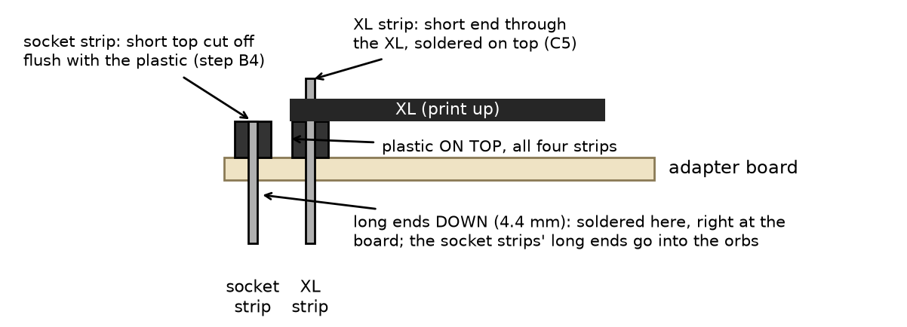
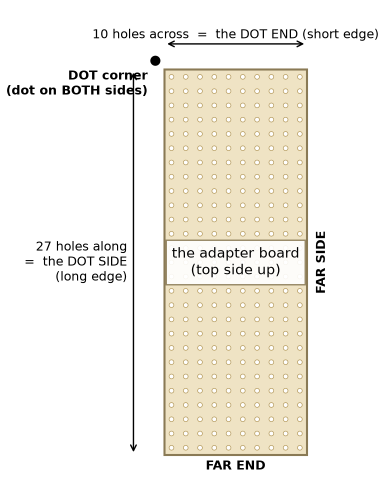
| adapter board | The piece of perfboard, 10 holes across, 27 holes along. |
| dot corner | The corner you mark with a dot on BOTH sides (step A3). Everything is counted from it. |
| dot end / far end | The short edge at the dot / the other short edge. The dot end goes at the orbs' case end. |
| dot side / far side | The long edge at the dot / the other long edge. |
| row 1 to 27 | Rows of holes counted from the dot end. Row 1 is at the dot end. |
| pin 1, pin 2 ... | Pins counted along a strip from the dot end. Pin 7 is always in row 7. |
| dot-side socket strip | 19 pins along the dot-side edge, rows 1-19. Plugs into the orbs' socket. Its pins carry the ESP32's names: 3V3, EN, SVP ... P13, SD2, SD3, CMD, 5V. |
| far socket strip | 19 pins along the far-side edge, rows 1-19. Names: GND, P23, P22 ... SD0, CLK. |
| dot-side XL strip | 27 pins in the 2nd column from the dot side, rows 1-27. The XL's "VB" row sits on it. |
| far XL strip | 27 pins in the 2nd column from the far side. The XL's "0" row sits on it. |
| XL 34, XL VB, XL - ... | An XL pin, by the name printed beside its hole on the XL. |
| empty hole | Where you pulled a pin out of an XL strip (step A5). It stays empty. |
| the XL | The Pimoroni Pico LiPo 2 XL W. |
| case USB board | The small green "V1297" board in the orbs with the USB-C port. |
| the cut cable | A cut USB-C cable. Find its D+ and D- wires with the meter first (on ours green = D+, white = D-). |
| top side / underside | Top = where the strips' plastic and the XL sit. Underside = where you solder. |
Every link goes on the underside, from a socket strip pin to an XL strip pin. Each end is melted into the pin's own solder joint right at the board. Nothing goes through a hole.
| step | what | cut | from | to | |
|---|---|---|---|---|---|
| ☐ | D1 | bare link | 5 mm bare | far socket pin 2 (P23, screens' clock) | far XL pin 2 (XL 34) |
| ☐ | D2 | bare link | 5 mm bare | far socket pin 6 (P21, screen D5 select) | far XL pin 6 (XL 31) |
| ☐ | D3 | bare link | 5 mm bare | far socket pin 8 (P19, screens' DC) | far XL pin 8 (XL 15) |
| ☐ | D4 | bare link | 5 mm bare | far socket pin 9 (P18, screens' reset) | far XL pin 9 (XL 14) |
| ☐ | D5 | bare link | 5 mm bare | dot-side socket pin 8 (P33, screen D2 select) | dot-side XL pin 8 (XL 16) |
| ☐ | D6 | bare link | 5 mm bare | dot-side socket pin 9 (P25, screen D4 select) | dot-side XL pin 9 (XL 17) |
| ☐ | D7 | short link | 8 mm, 2 mm bare each end | dot-side socket pin 10 (P26, LFT button) | dot-side XL pin 11 (XL 18) |
| ☐ | D8 | short link | 8 mm, 2 mm bare each end | dot-side socket pin 11 (P27, OK button) | dot-side XL pin 12 (XL 19) |
| ☐ | D9 | short link | 8 mm, 2 mm bare each end | dot-side socket pin 12 (P14, RHT button) | dot-side XL pin 13 (XL 20) |
| ☐ | D10 | short link | 8 mm, 2 mm bare each end | dot-side socket pin 15 (P13, screen D1 select) | dot-side XL pin 16 (XL 22) |
| ☐ | D11 | wire, any colour | 20 mm | dot-side socket pin 7 (P32, screen D3 select) | dot-side XL pin 4 (XL $46) |
| ☐ | D12 | wire, RED | 27 mm | dot-side socket pin 19 (5V, USB 5 V) | dot-side XL pin 27 (XL VB) |
| ☐ | D13 | wire, any colour | 30 mm | far socket pin 11 (P17, screens' data) | far XL pin 18 (XL 7) |
| ☐ | D14 | wire, BLACK | 22 mm | far socket pin 1 (GND, USB ground) | far XL pin 5 (XL -) |
| ☐ | D15 | wire, BLACK | 17 mm | far socket pin 7 (GND, screens' ground) | far XL pin 5 (XL -), same joint as D14 |
Use the top-side drawing on the next page for this part.
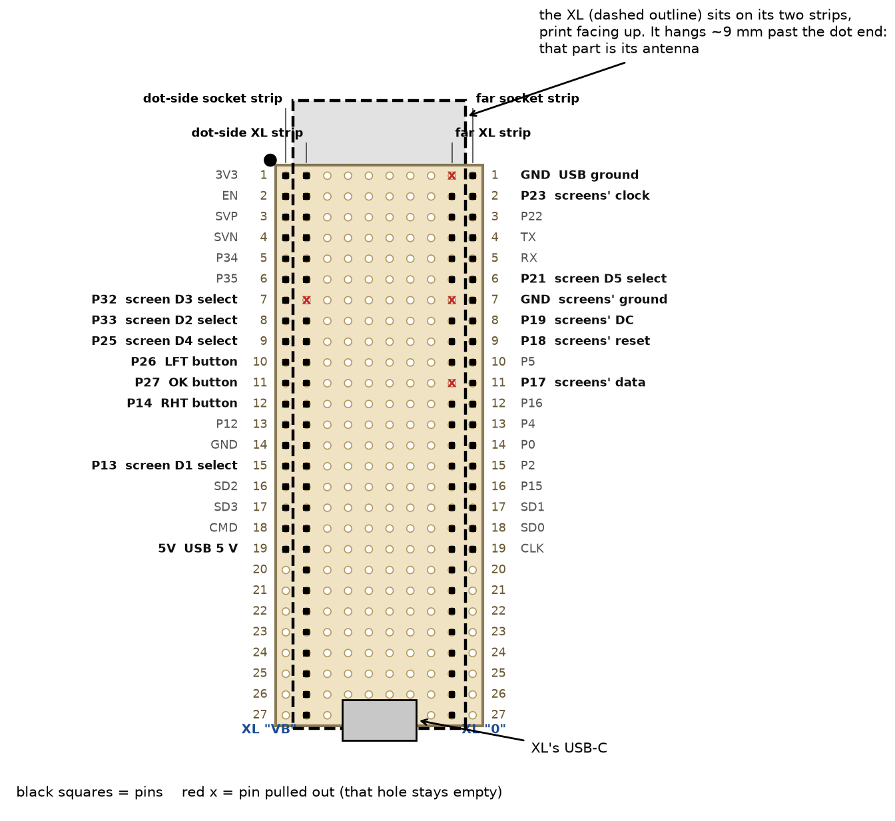
Each link has its own step and drawing on the following pages. This page shows them all together, as a check at the end.
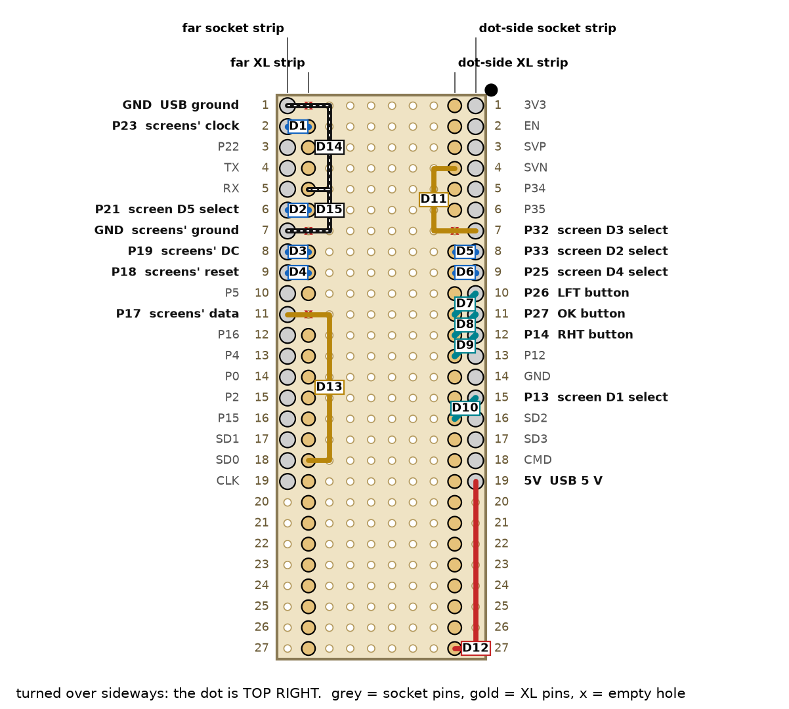
From far socket pin 2 (P23, screens' clock)
To far XL pin 2 (XL 34)
Cut a 5 mm piece of bare wire. Lay it flat across the two joints. Touch the iron to one joint until the wire sinks into it, then the other.
Check: tug it gently, it stays put; no solder joins it to a neighbouring pin.
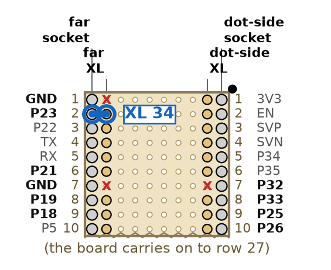
From far socket pin 6 (P21, screen D5 select)
To far XL pin 6 (XL 31)
Cut a 5 mm piece of bare wire. Lay it flat across the two joints. Touch the iron to one joint until the wire sinks into it, then the other.
Check: tug it gently, it stays put; no solder joins it to a neighbouring pin.
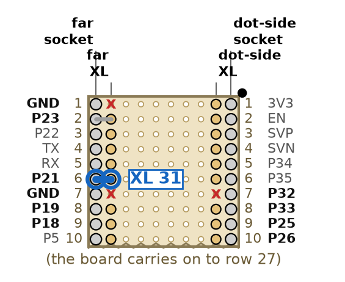
From far socket pin 8 (P19, screens' DC)
To far XL pin 8 (XL 15)
Cut a 5 mm piece of bare wire. Lay it flat across the two joints. Touch the iron to one joint until the wire sinks into it, then the other.
Check: tug it gently, it stays put; no solder joins it to a neighbouring pin.
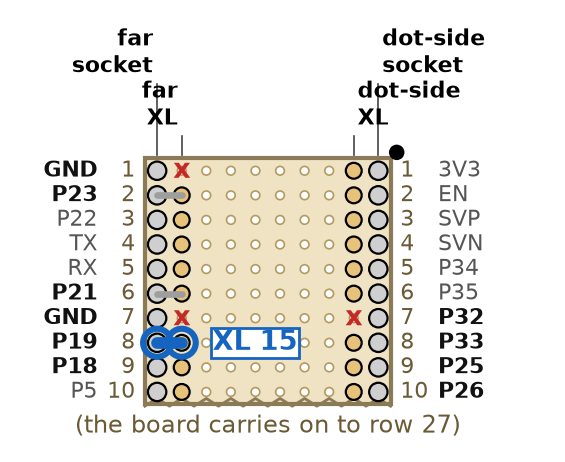
From far socket pin 9 (P18, screens' reset)
To far XL pin 9 (XL 14)
Cut a 5 mm piece of bare wire. Lay it flat across the two joints. Touch the iron to one joint until the wire sinks into it, then the other.
Check: tug it gently, it stays put; no solder joins it to a neighbouring pin.
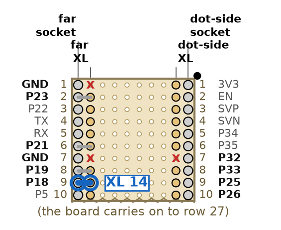
From dot-side socket pin 8 (P33, screen D2 select)
To dot-side XL pin 8 (XL 16)
Cut a 5 mm piece of bare wire. Lay it flat across the two joints. Touch the iron to one joint until the wire sinks into it, then the other.
Check: tug it gently, it stays put; no solder joins it to a neighbouring pin.
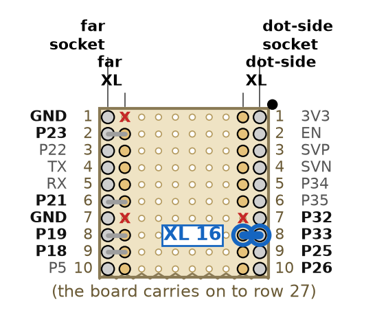
From dot-side socket pin 9 (P25, screen D4 select)
To dot-side XL pin 9 (XL 17)
Cut a 5 mm piece of bare wire. Lay it flat across the two joints. Touch the iron to one joint until the wire sinks into it, then the other.
Check: tug it gently, it stays put; no solder joins it to a neighbouring pin.
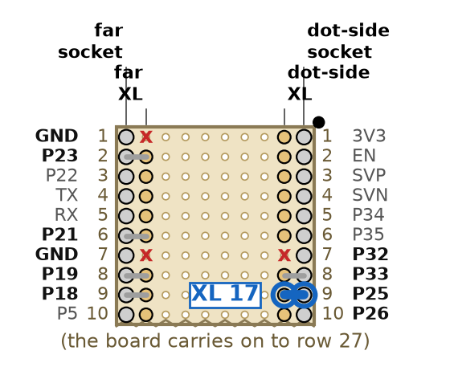
From dot-side socket pin 10 (P26, LFT button)
To dot-side XL pin 11 (XL 18)
Cut 8 mm of insulated wire and strip 2 mm off each end. Lay it flat, slanting from the socket pin to the XL pin one row further on. Melt each bare end into its joint. The insulation must not touch any other joint.
Check: tug it gently, it stays put; no solder joins it to a neighbouring pin.
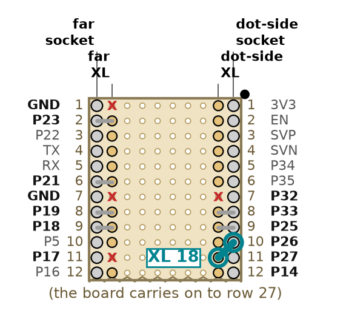
From dot-side socket pin 11 (P27, OK button)
To dot-side XL pin 12 (XL 19)
Cut 8 mm of insulated wire and strip 2 mm off each end. Lay it flat, slanting from the socket pin to the XL pin one row further on. Melt each bare end into its joint. The insulation must not touch any other joint.
Check: tug it gently, it stays put; no solder joins it to a neighbouring pin.
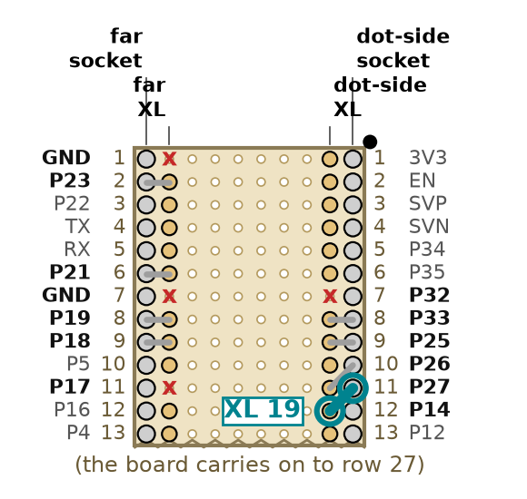
From dot-side socket pin 12 (P14, RHT button)
To dot-side XL pin 13 (XL 20)
Cut 8 mm of insulated wire and strip 2 mm off each end. Lay it flat, slanting from the socket pin to the XL pin one row further on. Melt each bare end into its joint. The insulation must not touch any other joint.
Check: tug it gently, it stays put; no solder joins it to a neighbouring pin.
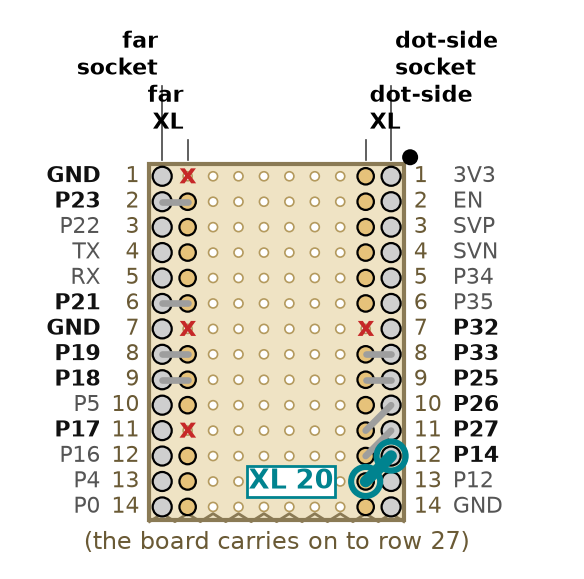
From dot-side socket pin 15 (P13, screen D1 select)
To dot-side XL pin 16 (XL 22)
Cut 8 mm of insulated wire and strip 2 mm off each end. Lay it flat, slanting from the socket pin to the XL pin one row further on. Melt each bare end into its joint. The insulation must not touch any other joint.
Check: tug it gently, it stays put; no solder joins it to a neighbouring pin.
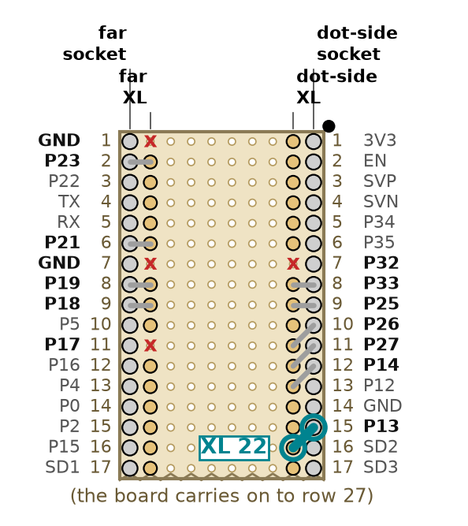
From dot-side socket pin 7 (P32, screen D3 select)
To dot-side XL pin 4 (XL $46)
Cut 20 mm of wire (any colour) and strip 2 mm off each end. Bend it to follow the drawing (over the empty XL hole 7, along the 3rd column from the dot side, back in at row 4), lying flat on the board. Melt one end into the socket pin's joint, then the other into the XL pin's joint. It doesn't go through any hole.
Check: tug it gently, it stays put; no solder joins it to a neighbouring pin.
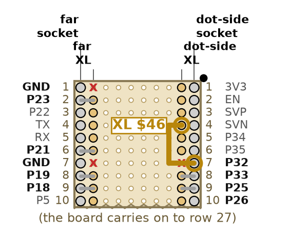
From dot-side socket pin 19 (5V, USB 5 V)
To dot-side XL pin 27 (XL VB)
Cut 27 mm of RED wire and strip 2 mm off each end. Bend it to follow the drawing (down the 8 empty holes of the dot-side edge to the last row), lying flat on the board. Melt one end into the socket pin's joint, then the other into the XL pin's joint. It doesn't go through any hole.
Check: tug it gently, it stays put; no solder joins it to a neighbouring pin.
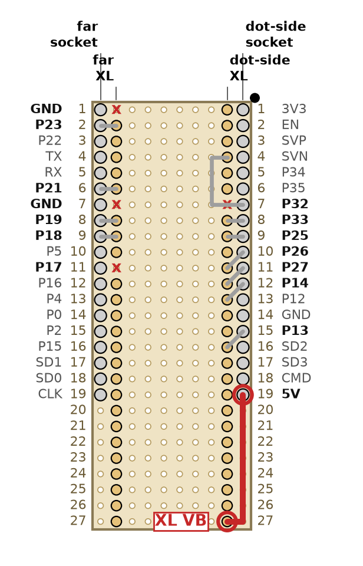
From far socket pin 11 (P17, screens' data)
To far XL pin 18 (XL 7)
Cut 30 mm of wire (any colour) and strip 2 mm off each end. Bend it to follow the drawing (over the empty XL hole 11, along the 3rd column from the far side, back in at row 18), lying flat on the board. Melt one end into the socket pin's joint, then the other into the XL pin's joint. It doesn't go through any hole.
Check: tug it gently, it stays put; no solder joins it to a neighbouring pin.
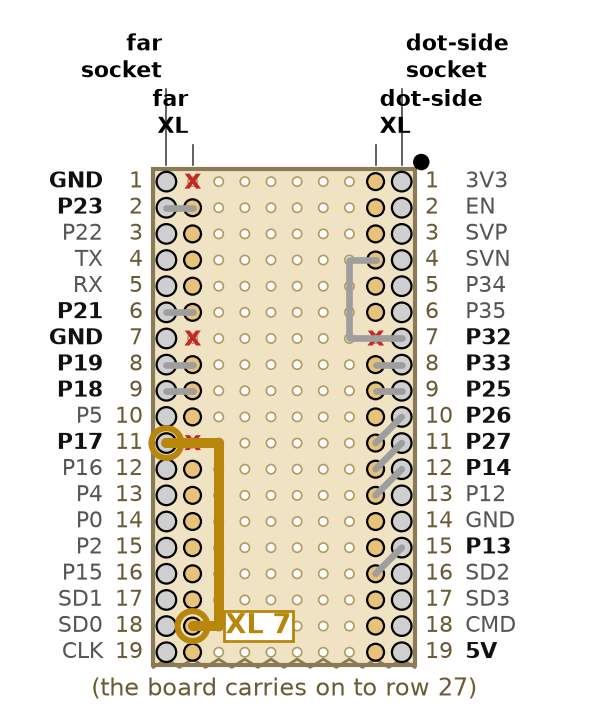
From far socket pin 1 (GND, USB ground)
To far XL pin 5 (XL -)
Cut 22 mm of BLACK wire and strip 2 mm off each end. Bend it to follow the drawing (over the empty XL hole 1, along the 3rd column from the far side, back in at row 5), lying flat on the board. Melt one end into the socket pin's joint, then the other into the XL pin's joint. It doesn't go through any hole.
Check: tug it gently, it stays put; no solder joins it to a neighbouring pin.
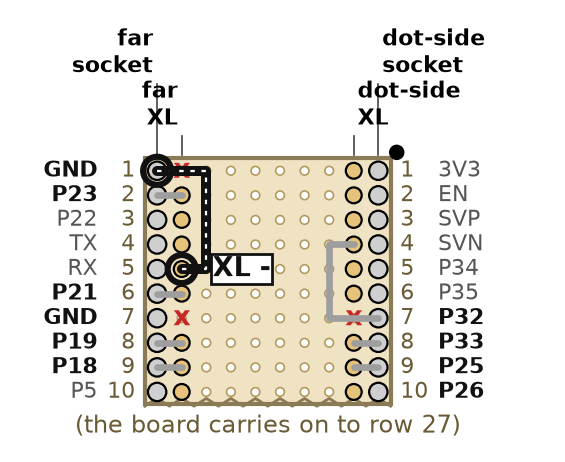
From far socket pin 7 (GND, screens' ground)
To far XL pin 5 (XL -), same joint as D14
Cut 17 mm of BLACK wire and strip 2 mm off each end. Bend it to follow the drawing (over the empty XL hole 7, along the 3rd column from the far side, back in at row 5), lying flat on the board. Melt one end into the socket pin's joint, then the other into the XL pin's joint. It doesn't go through any hole.
Check: tug it gently, it stays put; no solder joins it to a neighbouring pin.
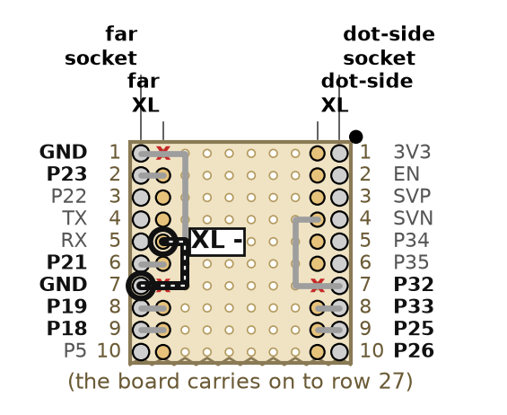
Probe on the socket pin's long end (underside) and on the XL pin sticking up through the named hole (XL side).
| one probe | other probe | should show | |
|---|---|---|---|
| ☐ | far socket pin 2 (P23) | XL 34 | about 0 |
| ☐ | far socket pin 6 (P21) | XL 31 | about 0 |
| ☐ | far socket pin 8 (P19) | XL 15 | about 0 |
| ☐ | far socket pin 9 (P18) | XL 14 | about 0 |
| ☐ | far socket pin 11 (P17) | XL 7 | about 0 |
| ☐ | far socket pin 1 (GND) | XL "-" (between 31 and 32) | about 0 |
| ☐ | far socket pin 7 (GND) | the same XL "-" | about 0 |
| ☐ | dot-side socket pin 7 (P32) | XL $46 | about 0 |
| ☐ | dot-side socket pin 8 (P33) | XL 16 | about 0 |
| ☐ | dot-side socket pin 9 (P25) | XL 17 | about 0 |
| ☐ | dot-side socket pin 10 (P26) | XL 18 | about 0 |
| ☐ | dot-side socket pin 11 (P27) | XL 19 | about 0 |
| ☐ | dot-side socket pin 12 (P14) | XL 20 | about 0 |
| ☐ | dot-side socket pin 15 (P13) | XL 22 | about 0 |
| ☐ | dot-side socket pin 19 (5V) | XL VB | about 0 |
| ☐ | dot-side socket pin 19 (5V) | far socket pin 1 (GND) | 1 |
| ☐ | far socket pin 7 (GND) | XL "+" (the empty hole between 15 and 31) | 1 |
| ☐ | far socket strip, each pair side by side: pins 1-2, 2-3, 5-6, 6-7, 7-8, 8-9, 9-10, 10-11, 11-12 | (9 pairs) | 1 each |
| ☐ | dot-side socket strip, each pair: pins 6-7, 7-8, 8-9, 9-10, 10-11, 11-12, 12-13, 14-15, 15-16, 18-19 | (10 pairs) | 1 each |
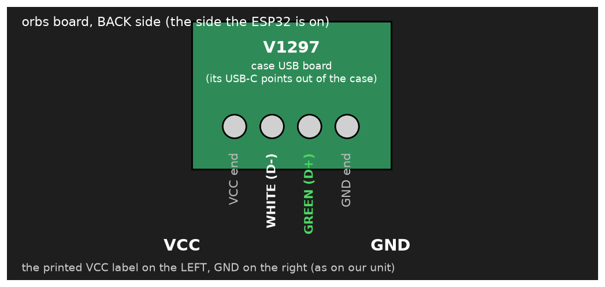
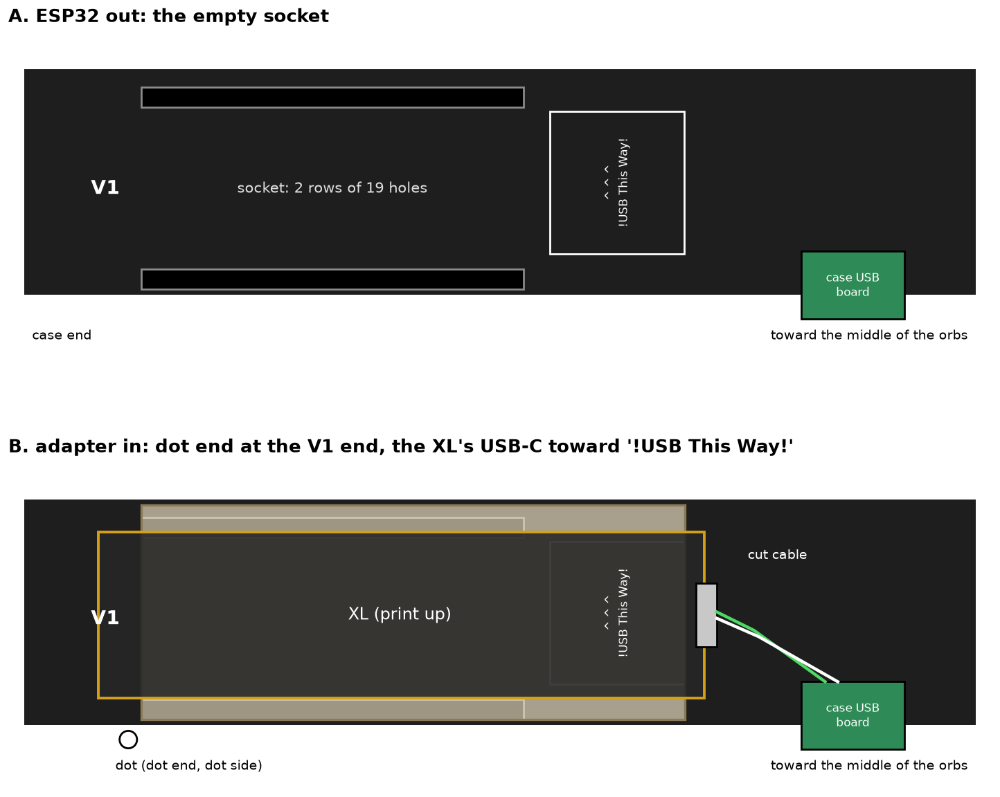